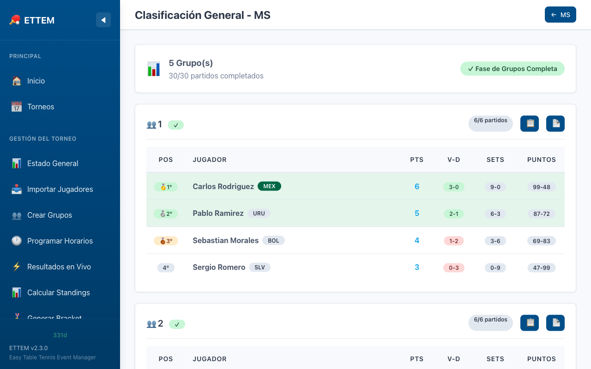

Standings
Cómo se calculan y muestran las posiciones finales de la fase de grupos.
Vista de Standings
Los standings muestran la tabla de posiciones de cada grupo al finalizar la fase de Round Robin. ETTEM los calcula automáticamente a medida que se ingresan resultados, sin necesidad de ningún cálculo manual.

Sistema de Puntos
Cada partido en la fase de grupos asigna puntos de partido según el resultado:
| Resultado | Puntos para el ganador | Puntos para el perdedor |
|---|---|---|
| Victoria normal | 2 | 1 |
| Derrota normal | — | 1 |
| Victoria por walkover (W.O.) | 2 | — |
| Derrota por walkover (W.O.) | — | 0 |
Columnas de la Tabla de Standings
| Columna | Descripción |
|---|---|
| Pos. | Posición en el grupo (1º, 2º, etc.) |
| Jugador | Nombre y bandera del país |
| PJ | Partidos jugados |
| PG | Partidos ganados |
| PP | Partidos perdidos |
| Pts | Puntos de partido acumulados |
| Sets +/- | Sets ganados y perdidos |
| Ratio Sets | Cociente de sets ganados / sets perdidos |
| Pts +/- | Puntos anotados y recibidos en todos los sets |
| Ratio Pts | Cociente de puntos a favor / puntos en contra |
Reglas de Desempate (Tiebreak)
Cuando dos o más jugadores tienen el mismo número de puntos de partido, ETTEM aplica los siguientes criterios de desempate en orden:
- Resultado entre sí (head-to-head) — Si solo hay dos jugadores empatados, gana quien venció al otro en el enfrentamiento directo dentro del grupo.
-
Ratio de sets — Cociente entre sets ganados y sets perdidos.
Un ratio más alto significa mejor posición.
Ejemplo: 8 sets ganados / 3 sets perdidos = ratio 2.67 -
Ratio de puntos — Cociente entre puntos totales a favor y puntos
totales en contra en todos los sets del grupo.
Ejemplo: 220 puntos a favor / 185 en contra = ratio 1.19 - Semilla original — Si aún hay empate después de los criterios anteriores, se usa la semilla asignada al crear los grupos (mejor ranking = mejor posición).
Actualización Automática
Los standings se actualizan en tiempo real conforme se ingresan resultados. No es necesario hacer ningún cálculo manual ni recargar la página — cada vez que guardas un resultado, las posiciones se recalculan instantáneamente.
Clasificación para el Bracket
Al completar todos los partidos de la fase de grupos, los standings determinan qué jugadores avanzan al bracket de eliminación directa. ETTEM toma automáticamente a los clasificados según la configuración del torneo (ej: los 2 primeros de cada grupo, el mejor tercero, etc.).
Imprimir Standings
Desde la vista de standings puedes imprimir la tabla de posiciones en formato PDF para publicar en el recinto del torneo. Ve al Centro de Impresión o usa el botón Imprimir en la página de standings de la categoría.